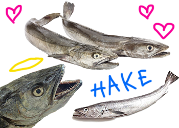
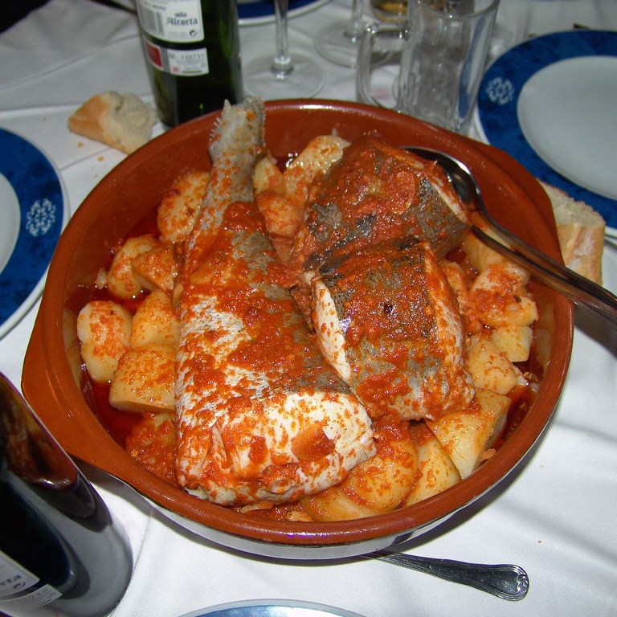
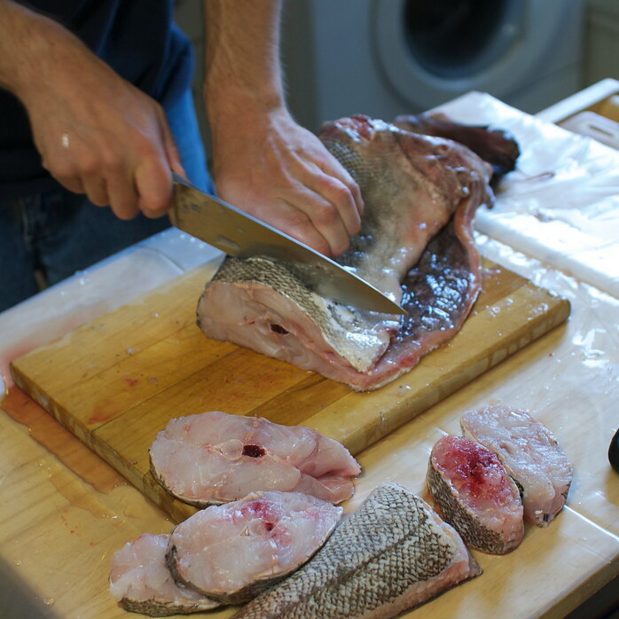
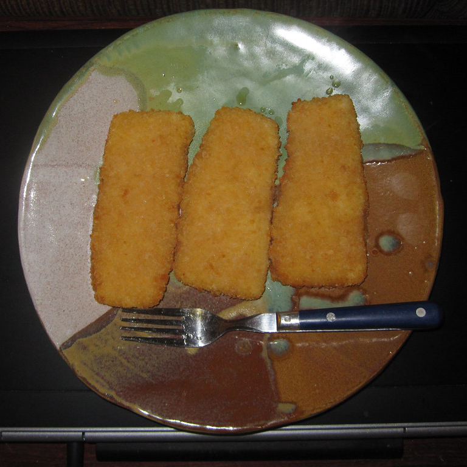
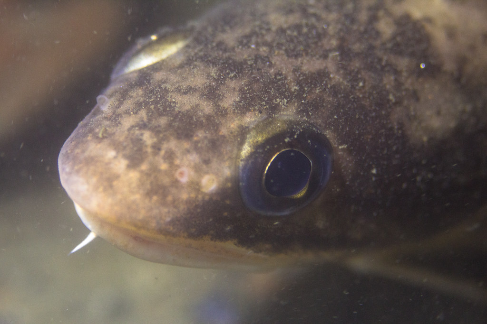
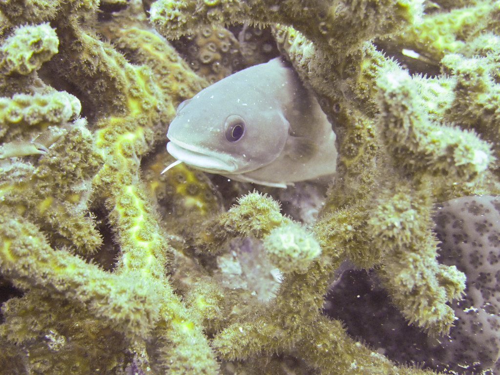

|
|
|||||
|
A friend recently asked me what my favourite fish I've seen on a dive is. The first thing that came to mind is all the HUGE pike and carp I've spotted in the rivers and lakes of Luxembourg, but then I remembered a fish I'm very fond of: the Hake. The fish is native to the North Atlantic, where it lives in relatively deep water. It has a maximum length of up to 3 feet and a maximum weight of up to 9 pounds. Although it's not very big, it is a stunning fish that regularly surprises divers. It's not uncommon to see them on divers' shoulders or on their hats as a lot of divers find it hard to believe that this little fish can make such a big impression on them. |

|
||||
|
Hake is best known for the huge amount of raw material it provides for fish fingers and fish 'n' chips, as well as being one of the popular ingredients in Grandma Yvonne's fish chowder (her recipe!). |
|||||

Galician style Hake |

Making Hake Steaks |

Oven Baked Blue Hake |
|||
|
Even though raw hake is a bit bland and tasteless, on a dive it can actually be quite beautiful. It's silvery colouration and slender body make it a lovely addition to anyreef, even though it's a little plain. I often see hake hidden in the sand, waiting for small prey (mostly shrimp, I think) to swim by. When one swims by, the hake accelerates at a tremendous speed to snare it with its teeth. I'm always a little bit amazed by how these fish can be so well camouflaged and yet so deadly-fast. |
  |
||||